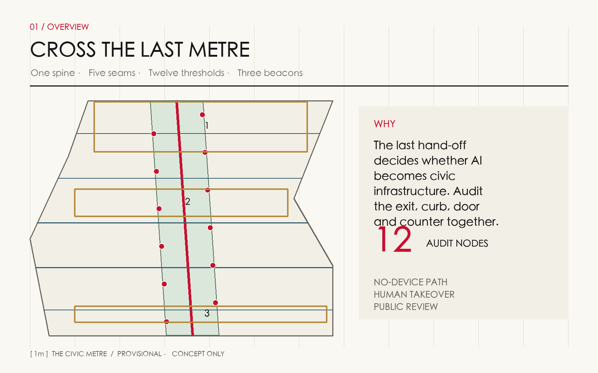
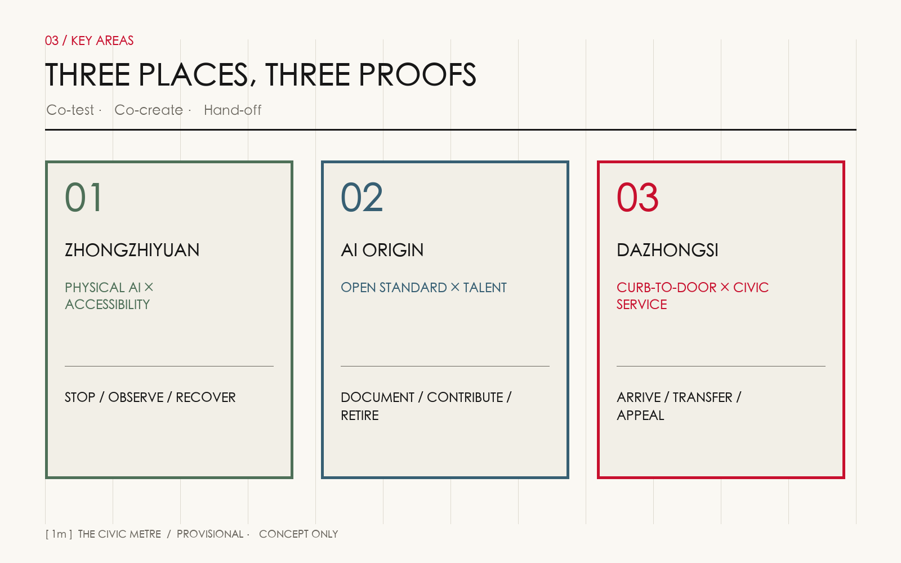
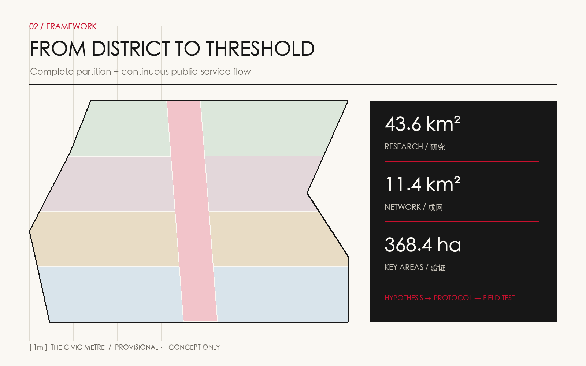
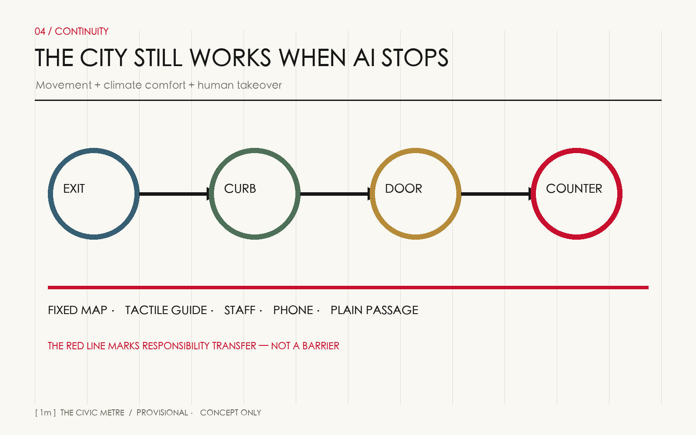
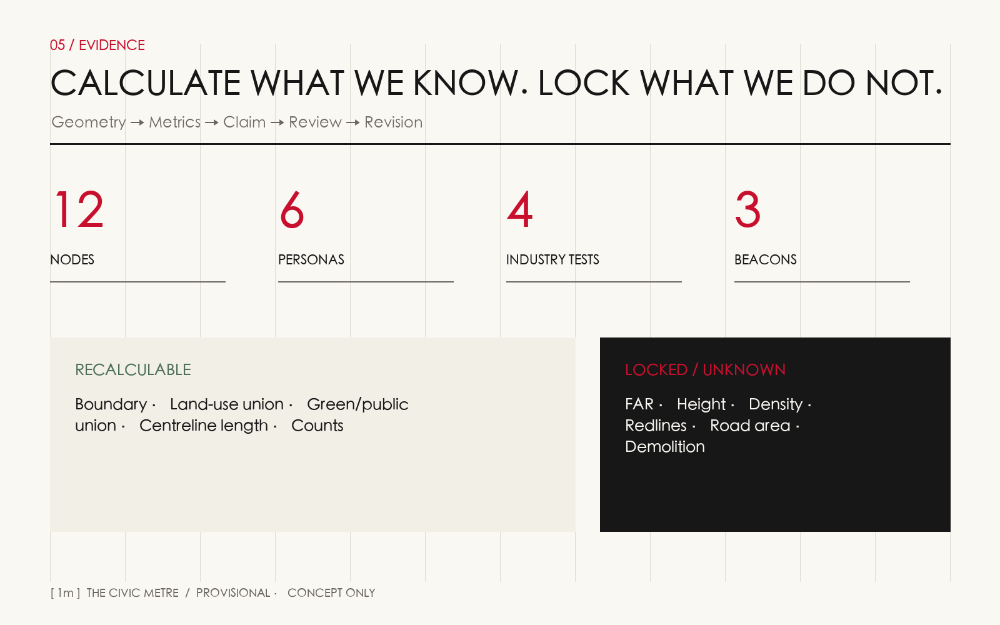

Coordinated research
Industry, talent, governance and future-city capability.
From station exit to curb, door and service counter: make AI, accessibility and human service continuity pass the same public test.
01 / Overview map
The last hand-off decides whether technology becomes civic infrastructure or another barrier. The red spine connects visible responsibility transfer, screen-free access and human takeover.

02 / Three scopes
Industry, talent, governance and future-city capability.
Continuous network, renewal packages and recalculable evidence.
Co-test, co-create and hand-off prototypes.
03 / Key areas
Zhongzhiyuan tests physical AI with accessibility; AI Origin writes open standards with talent and communities; Dazhongsi delivers public service from curb to door.

04 / Land-use zoning and buildings
Five conceptual partitions cover the provisional site. Six building footprints are service prototypes—not surveyed buildings or demolition decisions.

05 / Traffic, walking and blue-green public space
Fixed maps, tactile guidance, staff, telephone and plain passage stay available. Climate comfort, safe waiting and a visible complaint path accompany every digital service.

06 / AI scenarios and personas
Yield, low-speed delivery, positioning and device coordination; stop, observe, recover.
Screen-free, tactile, child-safe, night-visible, health-referral and multilingual paths.
Verified cultural interpretation plus complaint and withdrawal in four channels.
07 / Core metrics
FAR · total floor area · density · maximum height · road area · demolition decisions
08 / Renewal projects and phasing
| Phase | Work | Boundary |
|---|---|---|
| 0—12M | Audit, register, charter, six reversible pilots | No unverified permanent works |
| 1—3Y | Five seams and three co-test facilities | Subject to rights, fire, traffic and utilities |
| 3Y+ | Maintenance, procurement and review system | Official plans govern construction |
09 / Task coverage and self-check status
agent.1–agent.6 map to name/logo, six cases, twelve scenarios, four tests, six personas, three landmarks, cultural narrative and long-term operation. Spatial and visual checks rerun after every geometry change.

10 / Sources and assumptions
Original text, diagrams, GeoJSON, HTML and PDFs. No remote imagery, fonts, scripts, forms, iframes or tracking. Data minimization and human review apply to every service.